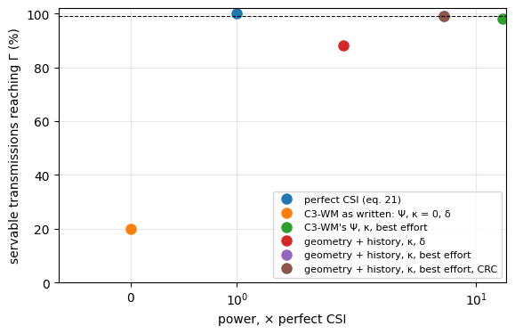
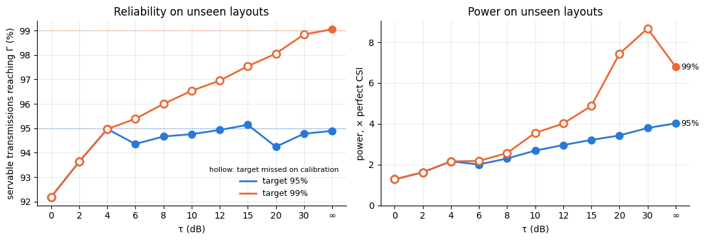

import math
import matplotlib.pyplot as plt
import numpy as np
from sklearn.ensemble import HistGradientBoostingRegressor
from comm_core import *C3-WM’s link, built from blocks
C3-WM’s communication model as a pipeline of comm-core blocks, its gain predictor replaced by the geometry + history quantile model, on ray-traced FindGoal layouts.
C3-WM (Elbakary, Weeraddana and Bennis) lets agents with local world models exchange discrete tokens over a wireless link, and sets each transmission’s power from a predicted channel gain. Its communication model (Sections III-B and IV-B) is a chain of steps, and each one is a comm-core block (see block). Built as a PipelineBackend, each step can be replaced on its own:
| C3-WM | block | |
|---|---|---|
the channel h_t: ray-traced (Sionna RT) at the agents’ cells, constant during a message |
eq. 4 | RayTracedFading |
the power, ρ̂ = Γσ²/ŷ, from a predicted gain ŷ |
eqs. 24–26 | a PowerControl |
the scheduling, δ = 1(ρ̂ ≤ ρ_max) |
eq. 27 | Schedule (below) |
the SNR, |h|² ρ / σ² |
eq. 6 | SINR |
| 49 tokens of 8 bits, BPSK, coherent ML detection | eqs. 3–5 | BitLevelLink(IndexCodec(256), BPSK()) |
| the received tokens, or the out-of-vocabulary embedding | eq. 13 | Tokens (below) |
| the communication cost | Fig. 8b | Airtime, and the network’s metrics |
Two changes, the point of the example:
- The gain predictor. C3-WM’s
Ψis linear in|h|²over the link’s last 4 gains (eq. 24). It is replaced by the geometry + history quantile model of power control on new layouts: gradient-boosted trees on the past gains, the agents’ moves and the layout’s walls, predicting the gain’s 5% quantile. Swapping it is swapping one block. - A margin, and the scheduling rule. Both predictors are also given a margin
κ, chosen on held-out layouts, and run with C3-WM’sδand with best effort (never withhold, send at mostρ_max). The rule is its own block.
Nothing new is ray-traced: the 40 FindGoal layouts of example 07 (data/findgoal_layouts.npz) are used. Two agents move at random. C3-WM’s TDMA gives every directed link its own sub-slot, so transmissions never overlap: there is no Interference block. Adding one would model a shared slot. Each agent sends its 49 tokens to the other at every step; random tokens stand in for MsgNet’s. Γ = 10 dB, σ² = −94 dBm and ρ_max = 20 dBm, as in example 07.
The layouts and the agents
As in example 07: each layout holds the ray-traced gain between every pair of free cells and the walls. Agents turn, step forward or wait at random, like a random policy in FindGoal.
data = np.load('data/findgoal_layouts.npz')
DIRS = [(1, 0), (0, 1), (-1, 0), (0, -1)]
class Layout:
"One ray-traced layout: the gain between any two free cells, and the walls between them."
def __init__(self, k):
self.seed = int(data['seeds'][k])
self.cells = [tuple(int(v) for v in c) for c in data['cells'][k]]
self.idx = {c: i for i, c in enumerate(self.cells)}
self.G = 10 ** (data['gain_db'][k].astype(float) / 10) # G[rx, tx]
self.walls = data['walls'][k]
def geometry(self, a, b):
"Distance (cells) and the number of wall cells the straight line between the two cell centres crosses."
n = max(int(abs(a[0] - b[0]) + abs(a[1] - b[1])) * 4, 1)
xs, ys = np.linspace(a[0], b[0], n + 1), np.linspace(a[1], b[1], n + 1)
crossed = {(int(round(x)), int(round(y))) for x, y in zip(xs, ys)} - {a, b}
return math.hypot(a[0] - b[0], a[1] - b[1]), int(sum(self.walls[c] for c in crossed))
layouts = {int(s): Layout(k) for k, s in enumerate(data['seeds'])}
FIT, CALIBRATION, TEST = range(0, 24), range(24, 30), range(100, 110)
STEPS, HISTORY, ROLLOUTS = 60, 4, 5
AGENTS = ['agent_0', 'agent_1']
def walk(lay, seed):
"One episode: per step, both agents' cells and headings."
rng = np.random.default_rng(seed)
free = set(lay.cells)
pos = [lay.cells[k] for k in rng.choice(len(lay.cells), 2, replace=False)]
head = [int(h) for h in rng.integers(4, size=2)]
out = []
for _ in range(STEPS):
out.append((tuple(pos), tuple(head)))
for a in rng.permutation(2):
action = rng.integers(4) # left, right, forward, nothing
if action < 2:
head[a] = (head[a] + (1 if action else -1)) % 4
elif action == 2:
ahead = (pos[a][0] + DIRS[head[a]][0], pos[a][1] + DIRS[head[a]][1])
if ahead in free and ahead != pos[1 - a]:
pos[a] = ahead
return outThe channel
As in C3-WM, the channel of a link is the ray-traced coefficient between the two agents’ cells (Section V): it is constant during a message (quasi-static, eq. 4) and changes when an agent moves. RayTracedFading looks it up in the layout’s table, at the cells it is told (set_positions).
Collecting C3-WM’s channel data with the blocks
C3-WM trains its predictor on D_channel (eq. 22): each directed link’s last gains and its current one. Here they come from the same block the network will use, called outside any network on a step’s transmissions and links, once per step of each episode. Training and deployment see the same channel by construction.
db = lambda g: 10 * np.log10(np.maximum(g, 1e-30))
LINKS = [(Transmission(Message(a, b, None), a, b, 0.0), Link(a, b)) for a, b in (AGENTS, AGENTS[::-1])]
def channel_data(seeds):
"Per directed link and step (after the first HISTORY): what the transmitter knows, and the true gain."
out = []
for seed in seeds:
lay = layouts[seed]
for k in range(ROLLOUTS):
episode = walk(lay, 1000 * seed + k)
table = RayTracedFading(np.sqrt(lay.G).astype(complex), lay.cells)
gains = []
for t, (cells, _) in enumerate(episode):
table.set_positions(dict(zip(AGENTS, cells)))
gains.append(np.abs(table(*zip(*LINKS))[:, 0]) ** 2) # the block alone: h of both links
gains = np.array(gains) # (steps, 2): agent_0 -> agent_1, back
for j, i in ((0, 1), (1, 0)):
g = gains[:, j]
for t in range(HISTORY, len(episode)):
(now, _), (before, heads), (earlier, _) = episode[t], episode[t - 1], episode[t - 2]
ahead = (before[i][0] + DIRS[heads[i]][0], before[i][1] + DIRS[heads[i]][1])
possible = [c for c in (before[i], ahead) if c in lay.idx and c != now[j]] or [before[i]]
out.append(dict(lay=lay, tx=now[j], rx=now[i], possible=possible, past=g[t - HISTORY:t][::-1].copy(),
moved=[float(now[j] != before[j]), float(before[i] != earlier[i])], gain=g[t]))
return out
fit, cal = channel_data(FIT), channel_data(CALIBRATION)
print(f'{len(fit)} transmissions to fit on (layouts 0-23), {len(cal)} to calibrate on (24-29)')13440 transmissions to fit on (layouts 0-23), 3360 to calibrate on (24-29)Both predictors are fit on the same data. C3-WM’s Ψ by least squares on |h|² (eq. 24, fit_gain_predictor); the quantile model on the link’s past gains in dB, the agents’ moves, and the distance and walls to the receiver’s cell. At run time, the receiver’s cell is known only as of its last report, so the quantile model predicts for each cell the receiver can have reached since, and takes the lowest (example 07).
def features(r, cell):
distance, walls = r['lay'].geometry(r['tx'], cell)
return [math.log10(max(distance, 0.5)), distance, walls] + list(db(r['past'])) + r['moved']
psi = fit_gain_predictor([np.r_[r['past'][::-1], r['gain']] for r in fit], history=HISTORY)
model = HistGradientBoostingRegressor(loss='quantile', quantile=0.05, max_iter=400, learning_rate=0.05, early_stopping=False,
random_state=0).fit(np.array([features(r, r['rx']) for r in fit]), db(np.array([r['gain'] for r in fit])))
def quantile_estimate(rs):
"The quantile model's gain, the lowest over each transmission's possible cells."
pairs = [(k, c) for k, r in enumerate(rs) for c in r['possible']]
out = np.full(len(rs), np.inf)
np.minimum.at(out, [k for k, _ in pairs], model.predict(np.array([features(rs[k], c) for k, c in pairs])))
return 10 ** (out / 10)
estimates = {"C3-WM's Ψ": lambda rs: np.array([max(psi(r['past']), 0.0) for r in rs]), # eq. 25
'geometry + history quantile': quantile_estimate}The margin. A prediction misses the true gain by its error, so the power aims κ dB above Γ: ρ̂ = 10^(κ/10) Γσ²/ŷ. Each predictor’s κ is the smallest that brings 99% of the servable transmissions to Γ on the calibration layouts, sending at most ρ_max. A transmission is servable if perfect CSI could deliver it: its gain is at least Γσ²/ρ_max. C3-WM itself uses no margin (κ = 0).
SNR_TARGET_DB, NOISE_DBM, MAX_POWER_DBM = 10.0, -94.0, 20.0
NOISE_W, MAX_POWER_W = 10 ** ((NOISE_DBM - 30) / 10), 10 ** ((MAX_POWER_DBM - 30) / 10)
GAMMA = 10 ** (SNR_TARGET_DB / 10)
G_MIN = GAMMA * NOISE_W / MAX_POWER_W # the weakest servable gain
MARGINS = np.arange(0, 40.01, 0.25)
def calibrate(estimate, target=0.99):
"(κ, share reaching Γ): the smallest κ reaching `target` on the calibration layouts, else the most reliable."
g, ghat = np.array([r['gain'] for r in cal]), estimate(cal)
servable, best = g >= G_MIN, None
for margin in MARGINS:
power = np.minimum(10 ** ((SNR_TARGET_DB + margin) / 10) * NOISE_W / np.maximum(ghat, 1e-300), MAX_POWER_W)
share = (power * g / NOISE_W >= GAMMA * (1 - 1e-9))[servable].mean()
if share >= target:
return margin, share
if best is None or share > best[1]:
best = (margin, share)
return best
margins = {name: calibrate(e) for name, e in estimates.items()}
for name, (margin, share) in margins.items():
print(f'{name:28s} κ = {margin:5.2f} dB: {100 * share:.1f}% of the servable calibration transmissions reach Γ')C3-WM's Ψ κ = 40.00 dB: 97.5% of the servable calibration transmissions reach Γ
geometry + history quantile κ = 7.75 dB: 99.0% of the servable calibration transmissions reach ΓThe power and the scheduling: two blocks
C3-WM’s eq. 26 (the power) and eq. 27 (whether to send) are separate steps, so they are separate blocks:
- The power is a
PowerControl. C3-WM’sΨis comm-core’sPredictedChannelInversion, which keeps each link’s past gains and uses a fallback power for the firstLsteps, as C3-WM does. The quantile model’s isLearnedChannelInversion, as in example 07. It needs the receiver’s last reported cell and heading (updatenotes where the agents are at every round), and the layout’s walls. - The scheduling is
Schedule. It sends only if the power asked for is within10^(τ/10) ρ_max, at no more thanρ_max.τ = 0is C3-WM’sδ;τ = ∞never withholds (best effort). It takespowerandactiveand gives them back narrowed, so it goes right after any power control.
class LearnedChannelInversion(PowerControl):
"Eq. 26 with the gain from `model` (features -> dB), the lowest over the receiver's possible cells."
def __init__(self, model, layout, table, headings, target_snr_db, margin_db, fallback_power):
self.model, self.layout, self.table, self.headings = model, layout, table, headings
self.target_snr_db, self.margin_db, self.fallback_power = target_snr_db, margin_db, fallback_power
self.reset()
def children(self):
return []
def reset(self, seed=None):
self._past, self._rounds = {}, []
def update(self, time):
"A new round: where the agents are now, and their headings; the earlier rounds are what they reported."
self._rounds = (self._rounds + [(dict(self.table.node_positions), dict(self.headings()))])[-3:]
def allocate(self, gain, noise_power, link=None, message=None):
past = self._past.setdefault((link.sender, link.receiver), [])
if len(past) < HISTORY or len(self._rounds) < 3:
power = self.fallback_power # not enough history yet
else:
(earlier, _), (before, heads), (now, _) = self._rounds
tx, rx = now[link.sender], before[link.receiver]
d = DIRS[heads[link.receiver]]
possible = [c for c in (rx, (rx[0] + d[0], rx[1] + d[1])) if c in self.layout.idx and c != tx] or [rx]
r = dict(lay=self.layout, tx=tx, past=np.array(past[-HISTORY:][::-1]),
moved=[float(tx != before[link.sender]), float(rx != earlier[link.receiver])])
predicted = 10 ** (min(self.model.predict(np.array([features(r, c) for c in possible]))) / 10)
power = 10 ** ((self.target_snr_db + self.margin_db) / 10) * noise_power / predicted
past.append(float(gain)) # fed back after the transmission
return power, True # whether to send: `Schedule`'s
class Schedule(Block):
"Eq. 27: send only if the power asked for is within the budget, `10^(τ/10) ρ_max`, at no more than `ρ_max`."
outputs = ('power', 'active')
def __init__(self, max_power, tau_db=0.0):
self.max_power, self.tau_db = max_power, tau_db
def call(self, power, active):
return np.minimum(power, self.max_power), np.asarray(active) & (power <= self.max_power * 10 ** (self.tau_db / 10))What the receiver gets
C3-WM has no CRC: the receiver maps whatever bits it detects back to tokens (eq. 8), errors included. When nothing arrives, its world model gets the out-of-vocabulary embedding e_OOV instead (as for future steps, eq. 13). Tokens is that last step: the tokens received, or OOV in each place when nothing arrived. It also counts the wrong tokens into the results’ metadata (info).
OOV = -1 # the out-of-vocabulary token
class Tokens(Block):
"The tokens the receiver's world model gets: the ones detected, or OOV in each place when nothing arrived."
outputs = ('payload', 'info')
def call(self, transmission, success, payload, info):
tokens, extra = [], []
for t, ok, p, i in zip(transmission, success, payload, info):
sent = np.asarray(t.message.payload)
got = np.asarray(p) if ok else np.full(sent.shape, OOV)
tokens.append(got)
extra.append({**i, 'wrong_tokens': int((got != sent).sum()) if ok else None})
return tokens, extraThe link, as a pipeline
The whole link is a list of blocks, given to a PipelineBackend. The pipeline checks the wiring when it is built: each block’s inputs must be the step’s, noise_power, or an earlier block’s outputs.
def link(lay, power_control, tau_db, crc=False):
"C3-WM's link in one layout, with a power control, a scheduling threshold, and optionally a CRC."
table = RayTracedFading(np.sqrt(lay.G).astype(complex), lay.cells)
return [table, power_control(lay, table), Schedule(MAX_POWER_W, tau_db), SINR(),
BitLevelLink(IndexCodec(256), BPSK(), drop_corrupted=crc), Tokens(), Airtime()]
backend = PipelineBackend(link(layouts[100], lambda lay, table: ChannelInversion(SNR_TARGET_DB), 0.0), noise_power=NOISE_W)
print(' → '.join(type(b).__name__ for b in backend.pipeline))RayTracedFading → ChannelInversion → Schedule → SINR → BitLevelLink → Tokens → AirtimeThe power controls compared, each one block of the list:
headings = {} # the agents' headings, set at every step
CONTROLS = { # name: (power control, τ[, CRC])
'perfect CSI (eq. 21)':
(lambda lay, table: ChannelInversion(SNR_TARGET_DB), 0.0),
"C3-WM as written: Ψ, κ = 0, δ":
(lambda lay, table: PredictedChannelInversion(psi, HISTORY, SNR_TARGET_DB, fallback_power=MAX_POWER_W), 0.0),
"C3-WM's Ψ, κ, best effort":
(lambda lay, table: PredictedChannelInversion(psi, HISTORY, SNR_TARGET_DB, fallback_power=MAX_POWER_W,
margin_db=margins["C3-WM's Ψ"][0]), math.inf),
'geometry + history, κ, δ':
(lambda lay, table: LearnedChannelInversion(model, lay, table, lambda: headings, SNR_TARGET_DB,
margins['geometry + history quantile'][0], MAX_POWER_W), 0.0),
'geometry + history, κ, best effort':
(lambda lay, table: LearnedChannelInversion(model, lay, table, lambda: headings, SNR_TARGET_DB,
margins['geometry + history quantile'][0], MAX_POWER_W), math.inf),
'geometry + history, κ, best effort, CRC':
(lambda lay, table: LearnedChannelInversion(model, lay, table, lambda: headings, SNR_TARGET_DB,
margins['geometry + history quantile'][0], MAX_POWER_W), math.inf, True),
}Through a network, on unseen layouts
Each power control runs on layouts 100–109, which neither the fit nor the calibration saw: 5 episodes per layout, 60 steps each, every agent sending its 49 tokens to the other at every step. The first L = 4 steps, while the predictors have no history, are left out of the results.
def run(power_control, tau_db, crc=False):
"The results after the first HISTORY steps, and the communication cost per episode (KB)."
results, cost = [], []
for seed in TEST:
lay = layouts[seed]
for k in range(ROLLOUTS):
backend = PipelineBackend(link(lay, power_control, tau_db, crc), noise_power=NOISE_W)
net = Network([Node(a) for a in AGENTS], FullMeshTopology(AGENTS), IdealProtocol(), backend)
net.reset(seed=1000 * seed + k)
tokens = np.random.default_rng(1000 * seed + k) # stand-ins for MsgNet's tokens
for t, (cells, heads) in enumerate(walk(lay, 1000 * seed + k)):
backend.set_positions(dict(zip(AGENTS, cells)))
headings.update(zip(AGENTS, heads))
for a, b in ((0, 1), (1, 0)):
net.send(Message(AGENTS[a], AGENTS[b], payload=tokens.integers(256, size=49)))
results += [r for r in net.step() if t >= HISTORY]
cost.append(net.metrics.summary().bits_sent / 8 / 1000)
return results, np.mean(cost)
def summary(results, cost):
g = np.array([10 ** (r.metadata['channel_gain_db'] / 10) for r in results])
p = np.array([r.metadata['tx_power'] for r in results])
servable = g >= G_MIN
return dict(
reached=(p * g / NOISE_W >= GAMMA * (1 - 1e-9))[servable].mean(), # servable ones reaching Γ
power=p.mean() / np.where(servable, GAMMA * NOISE_W / g, 0).mean(), # × perfect CSI's
withheld=np.mean([bool(r.metadata.get('outage')) for r in results]),
intact=np.mean([r.success and r.metadata['wrong_tokens'] == 0 for r, s in zip(results, servable) if s]),
wrong=np.mean([r.metadata['wrong_tokens'] / 49 for r in results if r.success] or [0.0]),
garbled=np.mean([r.success and r.metadata['wrong_tokens'] > 0 for r, s in zip(results, servable) if not s]),
cost=cost)
out = {name: summary(*run(*control)) for name, control in CONTROLS.items()}
print(f"{'':42s}{'reach Γ':>9s}{'power':>11s}{'withheld':>10s}{'intact':>9s}{'wrong':>8s}{'garbled':>9s}{'cost':>13s}")
for name, s in out.items():
print(f"{name:42s}{100 * s['reached']:8.1f}%{s['power']:10.3g}×{100 * s['withheld']:9.1f}%{100 * s['intact']:8.1f}%"
f"{100 * s['wrong']:7.2f}%{100 * s['garbled']:8.1f}%{s['cost']:8.2f} KB/ep") reach Γ power withheld intact wrong garbled cost
perfect CSI (eq. 21) 100.0% 1× 6.3% 99.9% 0.00% 0.0% 5.50 KB/ep
C3-WM as written: Ψ, κ = 0, δ 19.9% 0.00138× 0.0% 39.2% 46.53% 100.0% 5.88 KB/ep
C3-WM's Ψ, κ, best effort 98.1% 13.7× 0.0% 99.9% 2.77% 79.8% 5.88 KB/ep
geometry + history, κ, δ 88.1% 2.01× 16.4% 88.6% 0.23% 2.3% 4.98 KB/ep
geometry + history, κ, best effort 99.0% 6.79× 0.0% 99.5% 2.62% 71.3% 5.88 KB/ep
geometry + history, κ, best effort, CRC 99.0% 6.79× 0.0% 99.5% 0.00% 0.0% 5.88 KB/ep- reach Γ: the share of the servable transmissions whose SNR reaches
Γ. - power: the mean transmit power, relative to perfect CSI’s (exactly
Γσ²/gon each servable transmission, nothing on the others). - withheld: the share not sent (
δ = 0): the receiver getse_OOV. - intact: the share of the servable transmissions arriving with all 49 tokens right.
- wrong: the share of wrong tokens in what arrived. The receiver can’t tell them from right ones.
- garbled: the share of the unservable transmissions that arrive with wrong tokens: sent at
ρ_maxalthough no power could reachΓ. - cost: the bits sent per episode (C3-WM’s Fig. 8b), in KB.
fig, ax = plt.subplots(figsize=(6.5, 4))
for name, s in out.items():
ax.plot(s['power'], 100 * s['reached'], 'o', ms=8, label=name)
ax.axhline(99, color='k', lw=0.8, ls='--')
ax.set(xscale='symlog', xlabel='power, × perfect CSI', ylabel='servable transmissions reaching Γ (%)', ylim=(0, 102))
ax.grid(alpha=0.3)
ax.legend(fontsize=8, loc='lower right')
plt.show()
- C3-WM as written fails here.
Ψ, fit by least squares on|h|²(eq. 24), is dominated by the strong links. Its predictions never go below about −63 dB, while half of the links are weaker than −66 dB and a link is servable down to −104 dB. A weak link therefore gets a small fraction of the power it needs (0.14% of perfect CSI’s, overall). Only 20% of the servable transmissions reachΓ, and 47% of the tokens that arrive are wrong. Example 07 found the same bias. - A margin helps
Ψ, but not enough. With 40 dB, the largest tried, it brings 97.5% of the calibration transmissions toΓand 98.1% of the unseen ones, never 99%, at 13.7× perfect CSI’s power. Its error depends on the link’s strength, and one margin can’t correct all of them. - The geometry + history quantile model meets the target, at half the power. Its 7.75 dB margin, chosen on 6 layouts, brings 99.0% of the servable transmissions on 10 unseen layouts to
Γ, at 6.8× perfect CSI’s power. - C3-WM’s
δwithholds too much once there is a margin. With the same model and margin,δ = 1(ρ̂ ≤ ρ_max)withholds 16% of the transmissions, servable ones among them, and only 88% reachΓ. It is cheaper (2.0× the power, 4.98 instead of 5.88 KB per episode), and what it withholds arrives ase_OOV, which the world model reads as “no message”. - Best effort without a CRC feeds wrong tokens to the world model. Sent at
ρ_max, 71% of the unservable transmissions arrive with wrong tokens, and the receiver can’t tell: 2.6% of the tokens it gets are wrong. A CRC (BitLevelLink(drop_corrupted=True), one argument) turns them intoe_OOVinstead, with the same reliability: 99.5% of the servable messages still arrive intact, and no wrong token reaches the world model. The CRC’s own bits (e.g. 24 per message) are not counted here.
Changing it further
Each step is one block of the list, so a variant changes one entry:
- A shared slot instead of TDMA sub-slots:
Interference(table)afterSchedule, so that the other senders’ power counts in the SINR. - Coded 5G NR instead of uncoded BPSK:
SionnaLinkin place ofBitLevelLink(seesionna_phy). - Another predictor: another
PowerControlbeforeSchedule, e.g.MapChannelInversionwith a ray-traced map (a digital twin, if every layout can be ray-traced). - Another scheduling rule:
Schedule(ρ_max, τ)withτbetween 0 and ∞. Example 07 tunes it.
The numbers depend on the setting: two agents moving at random in FindGoal’s layouts, and random tokens standing in for MsgNet’s.
Between δ and best effort: the threshold τ
δ and best effort are the two ends of one rule: withhold a transmission only when its power would exceed 10^(τ/10) ρ_max, and send the others at no more than ρ_max. τ = 0 is C3-WM’s δ; τ = ∞ never withholds. In between, a transmission predicted to need a little more than ρ_max is still sent, at ρ_max, and one predicted to need far more is withheld.
The margin and the threshold work together: with a finite τ, a larger margin also withholds more. So each τ gets its own margin, the smallest that reaches the target on the calibration layouts. Then each pair is judged on the unseen layouts, for a 95% and a 99% target.
This sweep is analytic. It applies each (κ, τ) to the same predictions the power control makes in the network (quantile_estimate on the unseen layouts’ episodes), with the BPSK bit error rate for what arrives garbled. Two of the pairs are checked through the network below.
TAUS = (0.0, 2, 4, 6, 8, 10, 12, 15, 20, 30, math.inf)
test = channel_data(TEST)
ghat = {'cal': quantile_estimate(cal), 'test': quantile_estimate(test)}
gain = {'cal': np.array([r['gain'] for r in cal]), 'test': np.array([r['gain'] for r in test])}
ber = np.vectorize(bpsk_bit_error_rate)
def outcome(split, margin, tau):
"(servable reaching Γ, power × perfect CSI, withheld, unservable arriving garbled) of a (κ, τ) on a split."
g = gain[split]
rho = 10 ** ((SNR_TARGET_DB + margin) / 10) * NOISE_W / np.maximum(ghat[split], 1e-300)
sent = rho <= MAX_POWER_W * 10 ** (tau / 10)
power = np.where(sent, np.minimum(rho, MAX_POWER_W), 0.0)
servable, snr = g >= G_MIN, power * g / NOISE_W
garbled = np.where(sent, 1 - (1 - ber(snr)) ** (49 * 8), 0.0) # P(some bit wrong)
return ((snr >= GAMMA * (1 - 1e-9))[servable].mean(), power.mean() / np.where(servable, GAMMA * NOISE_W / g, 0).mean(),
1 - sent.mean(), garbled[~servable].mean())
def margin_for(target, tau):
"The smallest κ reaching `target` on the calibration layouts with this τ; else the most reliable."
shares = [outcome('cal', m, tau)[0] for m in MARGINS]
met = [m for m, s in zip(MARGINS, shares) if s >= target]
return (met[0], True) if met else (MARGINS[int(np.argmax(shares))], False)
sweep = {}
for target in (0.95, 0.99):
for tau in TAUS:
margin, met = margin_for(target, tau)
sweep[target, tau] = dict(zip(('reached', 'power', 'withheld', 'garbled'), outcome('test', margin, tau)),
margin=margin, met=met, cal_power=outcome('cal', margin, tau)[1])
label = lambda tau: '∞' if math.isinf(tau) else f'{tau:g}'
for target in (0.95, 0.99):
print(f'target {100 * target:.0f}%: τ (dB), κ (dB), then on the unseen layouts: reach Γ / power / withheld / garbled '
f'(✗: target not reached on the calibration layouts)')
for tau in TAUS:
s = sweep[target, tau]
print(f" τ = {label(tau):>3s} κ = {s['margin']:5.2f} {100 * s['reached']:5.1f}% {s['power']:5.2f}× "
f"{100 * s['withheld']:4.1f}% {100 * s['garbled']:4.1f}%{'' if s['met'] else ' ✗'}")target 95%: τ (dB), κ (dB), then on the unseen layouts: reach Γ / power / withheld / garbled (✗: target not reached on the calibration layouts)
τ = 0 κ = 0.50 92.2% 1.28× 9.7% 5.4% ✗
τ = 2 κ = 0.75 93.6% 1.62× 8.7% 5.6% ✗
τ = 4 κ = 2.50 95.0% 2.16× 8.6% 5.4% ✗
τ = 6 κ = 0.50 94.4% 2.01× 7.2% 6.8%
τ = 8 κ = 0.50 94.7% 2.30× 6.2% 9.8%
τ = 10 κ = 0.50 94.8% 2.68× 4.8% 23.1%
τ = 12 κ = 0.50 94.9% 2.96× 3.9% 34.2%
τ = 15 κ = 0.50 95.1% 3.21× 3.0% 42.2%
τ = 20 κ = 0.25 94.2% 3.43× 2.0% 51.1%
τ = 30 κ = 0.25 94.8% 3.79× 0.8% 62.1%
τ = ∞ κ = 0.25 94.9% 4.02× 0.0% 72.8%
target 99%: τ (dB), κ (dB), then on the unseen layouts: reach Γ / power / withheld / garbled (✗: target not reached on the calibration layouts)
τ = 0 κ = 0.50 92.2% 1.28× 9.7% 5.4% ✗
τ = 2 κ = 0.75 93.6% 1.62× 8.7% 5.6% ✗
τ = 4 κ = 2.50 95.0% 2.16× 8.6% 5.4% ✗
τ = 6 κ = 1.50 95.4% 2.18× 7.5% 6.1% ✗
τ = 8 κ = 2.50 96.0% 2.57× 7.2% 6.5% ✗
τ = 10 κ = 5.50 96.5% 3.56× 7.5% 5.6% ✗
τ = 12 κ = 6.25 97.0% 4.01× 7.1% 6.4% ✗
τ = 15 κ = 7.50 97.5% 4.88× 6.2% 9.0% ✗
τ = 20 κ = 13.50 98.1% 7.43× 6.9% 6.3% ✗
τ = 30 κ = 13.50 98.8% 8.67× 2.7% 44.4% ✗
τ = ∞ κ = 7.75 99.0% 6.79× 0.0% 72.0%colors = {0.95: '#2a78d6', 0.99: '#eb6834'} # categorical slots 1 and 2
x = np.arange(len(TAUS))
fig, (ax1, ax2) = plt.subplots(1, 2, figsize=(11, 3.8), sharex=True)
for target, color in colors.items():
met = np.array([sweep[target, t]['met'] for t in TAUS])
reached = np.array([100 * sweep[target, t]['reached'] for t in TAUS])
power = np.array([sweep[target, t]['power'] for t in TAUS])
for ax, y in ((ax1, reached), (ax2, power)):
ax.plot(x, y, '-', color=color, lw=2, label=f'target {100 * target:.0f}%')
ax.plot(x[met], y[met], 'o', color=color, ms=8) # filled: met on calibration
ax.plot(x[~met], y[~met], 'o', ms=8, mfc='white', mec=color, mew=2) # hollow: not met
ax1.axhline(100 * target, color=color, lw=0.8, ls=':')
ax2.annotate(f'{100 * target:.0f}%', (x[-1], power[-1]), xytext=(6, 0), textcoords='offset points', va='center', fontsize=9)
ax1.set(ylabel='servable transmissions reaching Γ (%)', xlabel='τ (dB)', title='Reliability on unseen layouts')
ax2.set(ylabel='power, × perfect CSI', xlabel='τ (dB)', title='Power on unseen layouts', ylim=(0, None))
for ax in (ax1, ax2):
ax.set_xticks(x, [label(t) for t in TAUS])
ax.grid(alpha=0.25)
for side in ('top', 'right'):
ax.spines[side].set_visible(False)
ax1.legend(frameon=False, loc='lower right', title='hollow: target missed on calibration', title_fontsize=8, fontsize=9)
plt.tight_layout()
plt.show()
The cheapest (κ, τ) per target on the calibration layouts, then the same pairs through the network on the unseen layouts, to check the analysis:
def tuned(target):
"The (τ, sweep entry) reaching `target` on the calibration layouts with the least power there."
ok = [tau for tau in TAUS if sweep[target, tau]['met']]
tau = min(ok, key=lambda t: sweep[target, t]['cal_power'])
return tau, sweep[target, tau]
checks = {}
for target in (0.95, 0.99):
tau, s = tuned(target)
control = lambda lay, table, m=s['margin']: LearnedChannelInversion(model, lay, table, lambda: headings, SNR_TARGET_DB, m, MAX_POWER_W)
checks[target] = (tau, s, summary(*run(control, tau)))
print(f"{'':30s}{'reach Γ':>9s}{'power':>9s}{'withheld':>10s}{'garbled':>9s}")
for target, (tau, s, net) in checks.items():
head = f"{100 * target:.0f}%: κ = {s['margin']:g} dB, τ = {label(tau)}"
print(f"{head:30s}")
for name, r in ((' analysis', s), (' network', net)):
print(f"{name:30s}{100 * r['reached']:8.1f}%{r['power']:8.2f}×{100 * r['withheld']:9.1f}%{100 * r['garbled']:8.1f}%") reach Γ power withheld garbled
95%: κ = 0.5 dB, τ = 6
analysis 94.4% 2.01× 7.2% 6.8%
network 94.4% 2.01× 7.2% 6.8%
99%: κ = 7.75 dB, τ = ∞
analysis 99.0% 6.79× 0.0% 72.0%
network 99.0% 6.79× 0.0% 71.3%δ(τ = 0) is the cheapest rule, and caps the reliability. With its own margin (0.5 dB), it reaches 92% of the servable transmissions at 1.3× perfect CSI’s power, whatever the target. More margin only withholds more. (In the table above,δhad best effort’s 7.75 dB margin, and reached 88%.) Up toτ = 4dB, neither target is reached on the calibration layouts, so both curves take the most reliable margin there, and coincide.- For 95%, a threshold of about 6 dB halves best effort’s power.
τ = 6dB with a 0.5 dB margin, the cheapest pair on the calibration layouts, reaches 94.4% on the unseen ones at 2.0× perfect CSI’s power. Best effort reaches 94.9% at 4.0×. It withholds 7.2% of the transmissions, mostly the links no power could serve (6.3%). - For 99%, best effort is the cheapest. No finite
τreaches 99% on the calibration layouts: to lose only 1%, nothing can be withheld. Raisingτtowards it costs more than best effort itself (8.7× at 30 dB), because the margin then has to make up for what the threshold still withholds. - The threshold also decides what arrives garbled. Without a CRC, every unservable transmission that is sent goes out at
ρ_maxand mostly arrives wrong. The share of unservable messages arriving garbled grows withτ, from about 5–7% up toτ = 6dB to 72% with best effort. A CRC removes this, whateverτis.
So δ is right if power matters more than reliability, and about 92% delivery is enough. A threshold of a few dB is the cheapest way to a target around 95%, and best effort with a CRC is the way to 99%. Which one C3-WM should use depends on how its world model copes with missing messages: that is its task success rate, which this example doesn’t measure.
assert out['perfect CSI (eq. 21)']['reached'] == 1.0 and abs(out['perfect CSI (eq. 21)']['power'] - 1) < 1e-9
assert out["C3-WM as written: Ψ, κ = 0, δ"]['reached'] < 0.5 # the bias of a fit in |h|²
assert out['geometry + history, κ, best effort']['reached'] > 0.985 # the margin transfers
assert out['geometry + history, κ, best effort']['reached'] > out["C3-WM's Ψ, κ, best effort"]['reached']
assert out['geometry + history, κ, δ']['withheld'] > 0.1 and out['geometry + history, κ, δ']['wrong'] < 0.01
for target, (tau, s, net) in checks.items(): # the analysis is the network
assert abs(net['reached'] - s['reached']) < 0.005 and abs(net['power'] - s['power']) < 0.02 * s['power']
assert not sweep[0.99, 0.0]['met'] and sweep[0.99, math.inf]['met'] # δ can't reach 99%